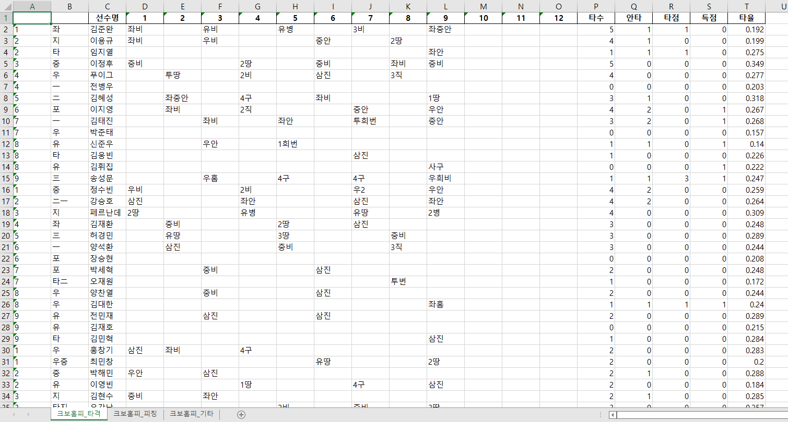
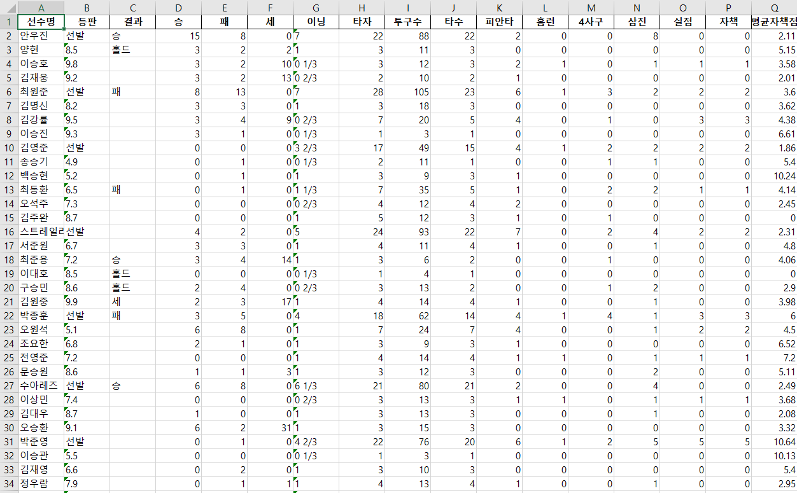

kbo 경기 결과 크롤링
.
알고 싶은 날짜를 입력하면
kbo 홈페이지에서 크롤링 해오기
.
.
from html_table_parser import parser_functions as parser
from selenium import webdriver
from selenium.webdriver.common.by import By
from selenium.webdriver.support.ui import WebDriverWait, Select
from selenium.webdriver.support import expected_conditions as EC
import collections
if not hasattr(collections, 'Callable'):
collections.Callable = collections.abc.Callable
import pandas as pd
from bs4 import BeautifulSoup as bs
import requests
import re
#0. 날짜 지정
game_day = input('알고 싶은 날짜 입력 (YYYYMMDD) : ')
year = game_day[:4]
month = game_day[4:6]
day = game_day[6:]
#1-1. kbo 홈페이지에서 달력 버튼 누르기
driver = webdriver.Chrome()
kbo_url = 'https://www.koreabaseball.com/Schedule/GameCenter/Main.aspx'
driver.get(kbo_url)
calendar_button = WebDriverWait(driver, 30).until(
EC.element_to_be_clickable((By.XPATH, '//*[@id="contents"]/div[2]/div/img'))
)
calendar_button.click()
#1-2. 달력에서 설정한 연도, 월, 일 누르기
year_select = Select(driver.find_element(By.XPATH,'//*[@id="ui-datepicker-div"]/div/div/select[2]'))
year_select.select_by_value(year)
month_select = Select(driver.find_element(By.XPATH,'//*[@id="ui-datepicker-div"]/div/div/select[1]'))
month_select.select_by_value(str(int(month)-1))
if int(day)>=10:
day=day
if int(day)<10:
day = str(day)
day = day[1:]
day_pick = WebDriverWait(driver, 30).until(
EC.element_to_be_clickable((By.LINK_TEXT, f'{day}'))
)
day_pick.click()
#1-3. 그 날 진행된 경기 결과 정리
kbo_html = driver.page_source
kbo_soup = bs(kbo_html, 'lxml')
today_game = kbo_soup.find_all('li', class_ = re.compile('game-cont'))
total_game_list = []
for info in today_game:
g_id = info.attrs['g_id']
class_info = info.attrs['class']
total_game_list.append((g_id,class_info))
df_total_game = pd.DataFrame(total_game_list)
df_total_game.columns=['g_id','status']
game_count = len(today_game)
#2. 기록 크롤링
df_etc_final = pd.DataFrame()
df_bat_final = pd.DataFrame()
df_pit_final = pd.DataFrame()
for g in range(game_count):
df_etc_record = pd.DataFrame()
df_bat_record = pd.DataFrame()
df_pit_record = pd.DataFrame()
#2-1. 진행 안 된 경기는 패스
if 'cancel' in str(df_total_game['status'][g]):
continue
elif 'end' in str(df_total_game['status'][g]):
#2-3. 더블헤더 등으로 5경기보다 경기가 많을 때 처리
if game_count>5:
if g==5:
next_button = driver.find_element(By.XPATH,'//*[@id="contents"]/div[3]/div/div[2]/div/a[2]')
next_button.click()
game_button = WebDriverWait(driver,30).until(
EC.element_to_be_clickable((By.XPATH,'//*[@id="contents"]/div[3]/div/div[1]/ul/li['+str(g+1)+']'))
)
game_button.click()
#게임 결과를 보기 위해 리뷰 버튼 클릭
review_button = WebDriverWait(driver,30).until(
EC.element_to_be_clickable((By.XPATH,'//*[@id="tabDepth2"]/li[2]'))
)
review_button.click()
page_loading = WebDriverWait(driver,30).until(
EC.presence_of_all_elements_located((By.ID,'tblEtc'))
)
page_html = driver.page_source
page_soup = bs(page_html, 'lxml')
#기타 기록
etc_info = page_soup.find_all('table', attrs={'id':'tblEtc'})[0]
etc_table = parser.make2d(etc_info)
df_etc = pd.DataFrame(etc_table[:], columns=['항목','사람'])
df_etc_record = pd.concat([df_etc, df_etc_record], axis=0, ignore_index=True)
#타자 기록
df_away = pd.DataFrame()
df_home = pd.DataFrame()
#타자 기록 표가 3단으로 구성되어 있음
for i in range(3):
away_batter = page_soup.find_all('table', attrs={'class':'tbl'})[i+4]
home_batter = page_soup.find_all('table', attrs={'class':'tbl'})[i+7]
away_batter_table = parser.make2d(away_batter)
home_batter_table = parser.make2d(home_batter)
df_away_batter = pd.DataFrame(away_batter_table[1:-1], columns=away_batter_table[0])
df_home_batter = pd.DataFrame(home_batter_table[1:-1], columns=home_batter_table[0])
df_away = pd.concat([df_away, df_away_batter], axis=1)
df_home = pd.concat([df_home, df_home_batter], axis=1)
df_bat_record = pd.concat([df_away, df_home], axis=0, ignore_index=True)
#12회까지 진행되지 않았어도 12회 형식으로 만들기
innings = len(df_bat_record.columns)
for m in range(20-innings):
location = innings -5 + m
inning_num = location -2
df_bat_record.insert(location, str(f'{inning_num}'),"")
#투수 기록
away_pitcher_info = page_soup.find_all('table', attrs={'id':'tblAwayPitcher'})[0]
home_pitcher_info = page_soup.find_all('table', attrs={'id':'tblHomePitcher'})[0]
away_pitcher_table = parser.make2d(away_pitcher_info)
home_pitcher_table = parser.make2d(home_pitcher_info)
df_away_pitcher = pd.DataFrame(away_pitcher_table[1:-1],columns=away_pitcher_table[0])
df_home_pitcher = pd.DataFrame(home_pitcher_table[1:-1],columns=home_pitcher_table[0])
df_pit_record = pd.concat([df_away_pitcher, df_home_pitcher], axis=0, ignore_index=True)
#2-4. end, cancel 이외의 경기 철리
else:
continue
#3. 최종 정리
df_etc_final = pd.concat([df_etc_final, df_etc_record], axis=0, ignore_index=True)
df_bat_final = pd.concat([df_bat_final, df_bat_record], axis=0, ignore_index=True)
df_pit_final = pd.concat([df_pit_final, df_pit_record], axis=0, ignore_index=True)
#4. 기록 숫자로 변환
df_bat_final.iloc[:, 14:] = df_bat_final.iloc[:, 14:].apply(pd.to_numeric, errors = 'ignore')
df_pit_final['이닝'] = df_pit_final['이닝'].replace('1/3', '0 1/3')
df_pit_final['이닝'] = df_pit_final['이닝'].replace('2/3', '0 2/3')
df_pit_final.iloc[:, 3:] = df_pit_final.iloc[:, 3:].apply(pd.to_numeric, errors = 'ignore')
#5.엑셀에 정리
with pd.ExcelWriter(f'{game_day}'+'.xlsx') as writer:
df_bat_final.to_excel(writer, sheet_name='크보홈피_타격', index=False)
df_pit_final.to_excel(writer, sheet_name='크보홈피_피칭', index=False)
df_etc_final.to_excel(writer, sheet_name='크보홈피_기타', index=False)
print("완료되었습니다")
.
.

